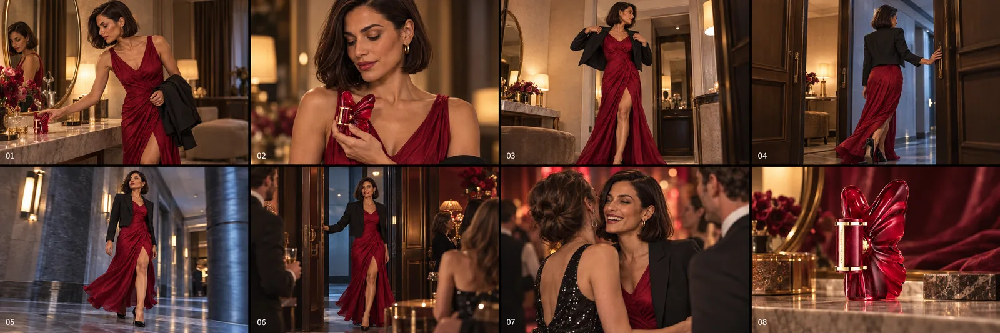

뷰티·향수AI 영상 광고키비주얼·포스터콘티·프리비즈인물·스토리
붉게 펼쳐지다 — 실사판
Carolina Herrera La Bomba Intensa
외출 준비 → 향수 분사 → 행사 입장. 같은 인물의 저녁을 32초로 보여 주는 AI 영상 광고예요. 버전마다 받은 피드백을 하나씩 반영해 v5까지 만들었어요.
v5 32초 · 1920×1080 · 소리 있음 — AI 생성 영상, 공식 제품 사진 구간은 직접 만든 3D 병 그림으로 교체
32초1080p · 768프레임 · 11컷
5버전피드백 반영 반복
12개직접 합성한 효과음
브리프
제품만 도는 콘티를 거절하고, 사람이 병을 쓰는 이야기형 광고로 방향을 바꿨다.
키비주얼
콘티

캐릭터
본편 v5
로컬 GPU에서 새 영상 7테이크(562프레임)를 생성하고, 분사음이 음악에 묻히지 않게 믹스했다.
Gallery
갤러리


Drag ↔ / Scroll ↓
Films
버전별 영상 5편
내가 한 일
기획·콘티AI 영상 생성 운영 (로컬 MiniMax-H3)편집·효과음 합성·믹스버전별 피드백 반영
사용한 도구
ComfyUI · MiniMax-H3ACE-Step (음악)Python (효과음·믹스)ffmpeg
AI 생성 도구 사용 — AI 생성 도구를 쓴 부분은 작품마다 따로 표기했습니다.
모든 광고는 실제 브랜드와 관계없는 개인 비공식 콘셉트 작품입니다.
NEXT
앱·서비스SNS 세로 컷콘티·프리비즈UI·키네틱 타이포
이번 달 내 월급, 햄스터는 알고 있다
월급햄스터 (직접 만든 앱, 출시 준비 중)
직접 만든 알바 월급 계산 앱의 광고예요. 퇴근 버튼 한 번 → 오늘 번 돈 → 이번 달 실수령 → 명세서 대조 → 계산 근거, 앱의 실제 기능 순서가 그대로 장면이 되는 세로 30초예요.
케이스 스터디 보기 →